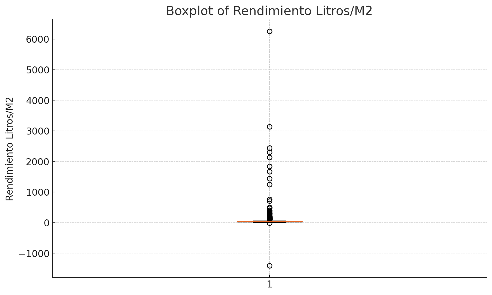
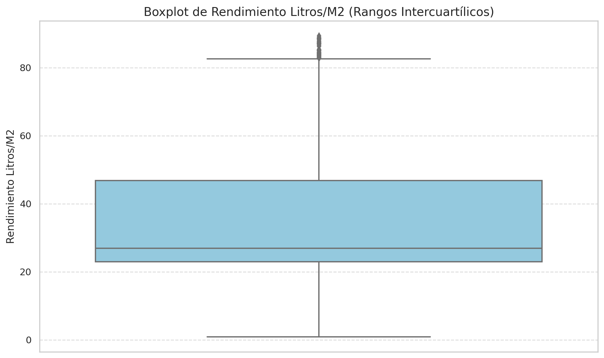

Introducción
Ternium, líder en acero, busca:
- Identificar las variables que influyen en el rendimiento y consumo de pinturas y analizarlas a través del tiempo.
- Identificar patrones que permitan determinar un pronóstico de rendimiento y consumo de pinturas.
- Una herramienta predictiva basada en datos históricos para anticipar el consumo futuro de las pinturas en su producción y el rendimiento de estas.

Se buscó el mejor modelo de Machine Learning.
Se realizo una limpia de las bases de datos proporcionadas.
Descubrimos ciertas problemáticas dentro de las bases de datos otorgadas.
La cuestión crítica
Todo comenzó cuando el rendimiento de las pinturas industriales de Ternium empezó a mostrar inconsistencias preocupantes.
- Quedan pintudas rezagadas
- No se sabe la cantidad de pintura consumida exacta
- Problema con la calidad de los datos
Boxplot del Rendimiento
Boxplot del Rendimiento (Zoom)
Datos atípicos en rendimiento
Análisis y Limpieza de Datos
Bases de datos utilizadas:
- Pinturas Revestidos Mx Jul20-Ago23_psch.xlsx
- Líneas de pintado
- Cantidad de litros registrados por día
- Valor en dólares
- Pinturas
- Producción Ene21-Ago23_xlsx
- Producción de rollos diaria
- Largo de rollo
- Ancho de rollo
- Usuarios
Análisis
%Porcentaje de información perdida
39%Outliers
- Ctd. total reg. 312
- Valor var. 254
- Metros cuadrados reales por rollo 351
- Rendimiento Litros/M2 148
Número de registros negativos
138Proceso de Limpieza de Datos
Pinturas con presencia en todos los meses:
- 0601-VERDE PRIMSA
- 0028-CLEAR P/ESPUMA
- 0400-GRIS FONDO
- 0023-CLEAR EPOXICO P/ESPUMA
- 0021-UNIVERSAL PRIMER
- 0102-BLANCO STD
- 0079-BECKRYPRIM 246
- 0038-PRIMER 917
- 0404-GRIS FONDO MC
- 0435-APOLLO GRAY KRYSTAL KOTE
- 0104-BLANCO SUPERMATIC
Imputación:
Recomendaciones y Conclusiones
- Automatización de notificaciones en Power Bi
- Tabla de alertas
- Indicadores de Estado
Ejemplo de Alertas Configuradas en Power BI:
Alerta de Registro Faltante:
Condición: Si [Ctd. total. reg] es 0.
Acción: Enviar un correo electrónico al gerente de producción.
Frecuencia: Inmediatamente al detectar el problema.
Alerta de Alta Variabilidad:
Condición: Si [Valor Var.] excede un umbral definido.
Acción: Enviar un correo electrónico al equipo de calidad.
Frecuencia: Una vez al día si la condición se cumple.
Tabla de Estado de Producción
| Línea de Producción | Estado |
|---|---|
| Línea 1 | |
| Línea 2 |
| Fecha | Problema | Estado | Responsable |
|---|---|---|---|
| 01-Jun | No se registraron datos en la Línea 4 | Pendiente | Juan Pérez |
| 02-Jun | Alta variabilidad en Línea 3 | En proceso | María García |
| 03-Jun | Datos incompletos en Línea 2 | Resuelto | Luis Fernández |